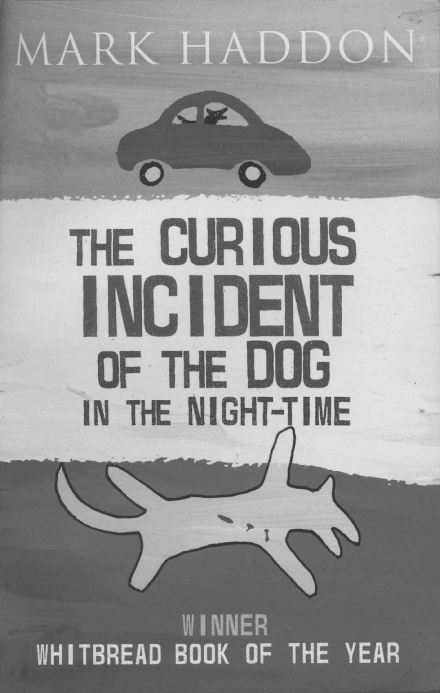

阿斯伯格综合征已为人熟知，我们应该格外关注一下。它可以被看作自闭症的一种，有相似的生物学原因，对大脑和思维的发育有类似的效果，但在行为上的表现却不那么一样。起码这是我们目前所认为的。
阿斯伯格综合征通常被认为是轻微的自闭症。但这种说法很有欺骗性。它可能是比较纯正的自闭症，只是大量学习和补偿措施掩盖了核心问题。之所以说“补偿措施”和“掩盖”，是有道理的。阿斯伯格综合征通常伴随高智商，另外，阿斯伯格综合征人士写的书讲述了他们遇到的困难，以及如何应对困难。这些困难很容易让人联想到自闭症人士遇到的困难。
阿斯伯格综合征最奇特的地方也许在于，它通常在八岁甚至更晚才能被诊断出来，有时甚至到成年才能确诊。这很奇怪，因为它是一种发育障碍。它并非突发性的，但一直存在，对这一点家人和被他们折磨的人一致赞同。
人们还需要进一步研究来揭示阿斯伯格综合征的早期症状。相比自闭症，它的语言发展并不滞后，相反通常还会领先。爱德华就是个例子。进一步说，经典自闭症意味着疏离感，而阿斯伯格综合征人士未必如此。阿斯伯格综合征人士往往对其他人兴趣浓厚。阿斯伯格综合征的孩子们往往把成人当作他们自言自语珍贵的聆听者，当作所有问题的答案，当作有用信息的提供者。
自闭症和阿斯伯格综合征最显著的差异在于，阿斯伯格综合征的孩子表现出极高的言语智商。这恰恰是家长们骄傲和开心的源泉，但很有可能使他们忽视孩子缺乏真正的交互性社交行为。爱德华可以再次作为一个例证。从加里的例子来看，这个标签有时也会贴在那些有轻微智力缺陷但社交障碍明显的人士身上。在这里，其实阿斯伯格综合征是指一种非典型性自闭症。
这跟汉斯·阿斯伯格有什么关系？汉斯·阿斯伯格强调过，自闭症障碍可能有不同的程度和类型，包括一些症状轻微的类型，包括那些高智商的类型。他是首批不仅在孩子身上，也在成人身上辨认并描述自闭症的人之一。他把他的病例标为“自闭精神病态者”，暗示这种情形并非疾病，而是一个人自身性格的一部分。阿斯伯格本人并没有定义我们今天所称的阿斯伯格综合征。然而，以他之名来命名这种综合征似乎是合适的。
为何阿斯伯格综合征能有今天如此牢固的地位？原因很多，最重要的一点可能是需要拓宽最初概念狭窄的经典自闭症。在1980年代，很多医生开始使用阿斯伯格综合征这个标签。伦敦的洛娜·温用这个名词来引起人们关注一个事实，即有些患有自闭症障碍的人可能言语能力非常好，甚至也有社交兴趣。哥德堡的克里斯托弗·伊尔贝里还拟定了诊断标准，以描述这类特殊的人群。这使得其他中心的医生们也能辨认出类似的病例。如今普遍用于阿斯伯格综合征的标准，跟过去被认为是冗余或非典型性自闭症的标准十分类似。它们与自闭症诊断标准几乎在每个方面都一样。非常重要的是，语言不仅没有滞后，通常还是特别的认知优势。
很多医生采用阿斯伯格综合征这个标签，表明有迫切需要单列出来。他们遇到很多符合标准的人。这些孩子和成人总体上来说并没被严重影响，很有希望预后良好。很多父母热切希望自己的孩子被诊断为阿斯伯格综合征而不是自闭症，这并不奇怪。这个标签不可避免地受到大家欢迎。
无论是否适宜，阿斯伯格综合征像块磁铁，吸引着越来越多的病例。吸引力之一是它已成为跟天才有关的标志。所以毫不奇怪，被诊断为阿斯伯格综合征，意味着比自闭症更有意思，且困难可能更容易驾驭。然而这种看法并不正确。它的困境如同任何其他自闭症障碍一样顽固。尽管如此，阿斯伯格综合征在大众的想象当中地位特别。
从马克·哈登的书《深夜小狗神秘事件》（The CuriousIncident of the Dog in the Night-time） [1] 中可以看到对患有阿斯伯格综合征的小男孩的形象描绘。这本书已卖出200万册，被翻译为36种语言。它毫无疑问提高了人们对阿斯伯格综合征的意识。此书第二章开头简明扼要描写道：“我的名字叫克里斯托弗·约翰·弗朗西斯·布恩。我知道世界上所有国家和它们的首都，也记得7507以内的所有质数。”
我们直截了当了解到男孩的特殊兴趣和他非凡的记忆力。他声称跟夏洛克·福尔摩斯有血缘关系，因为福尔摩斯也极为善于分析，并且他可能也属于自闭症谱系。
故事中很多细节很可能取材自真实生活，因而提供了显著例子说明阿斯伯格综合征人士的典型特征。比如，故事叙述者克里斯 [2] 说，他发现自己不能理解别人，他从不说谎，他不喜欢小说是因为小说都是谎言。他不能理解礼貌用语有什么用。所以他会说“我学校里其他所有小孩都是笨蛋。我也不想称呼他们为笨蛋，即使他们其实真的太笨了。我的意思是他们有学习困难或者他们有特殊需求”。

图3 《深夜小狗神秘事件》的封面
自闭症历史的又一阶段
尽管已广为人知，阿斯伯格综合征的标签还是有问题的。
我们很难预测阿斯伯格综合征最终是否能从自闭症中独立出来，在发育障碍当中独树一帜，另立类别。它的确是自闭症的一种且有相同的致病基因吗？还是说它仅仅是一种人格类型而不是障碍？
现在很多人自我诊断患有阿斯伯格综合征，这些人常自称亚皮士（Apies），自认为不同于NT们，即神经正常人士（neurotypicals）。他们不需要医生的关注，完全适应日常生活，已为他们的特别兴趣和特殊技能闯出一片小天地。这些人声称阿斯伯格综合征不是疾病也就不足为奇。对他们来说这仅仅是差异，而且是引以为豪的差异。
更有甚者，有人说对整个自闭症谱系来说，讨论大脑异常是错误的，关注思维缺陷是错误的，强调行为障碍是错误的。相反，只应该谈论大脑和思维构造的差异，这些差异中的一部分代表了自闭症。这真是奇谈怪论，对那些熟悉经典自闭症和其他严重自闭症病例，并了解自闭症伴随的痛苦的人来说，这种想法有悖常理。您可以坚持己见，但本书也就不适合您了。